Informações e comentários
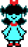
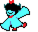
AquaKnife/Faca Aqua
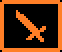
Facilita a realização de críticos.
Uma ótima escolha para uma rota agressiva,
pois permite que Kris atinja danos semelhantes aos da Susie. Contudo, essa arma é completamente
superada pelo BlackShard em questão de status, tornando o seu benefício crítico irrelevante. Assim,
acaba sendo uma das armas menos escolhidas, por ser inútil em uma rota pacifista e já ser facilmente
substituível no capítulo 3.
+10AT
+2DF
Critical
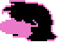
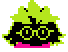
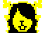
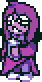
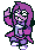
SethSpecs/Óculos do Seth
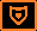
Aumenta o tempo de invulnerabilidade após sofrer dano.
Claramente, essa armadura tem uma tendência defensiva, além de oferecer
uma boa quantidade de magia, o que permite uma cura mais eficiente.
Infelizmente, apesar da maior invencibilidade, a defesa deixa a desejar.
Afinal, por ser uma armadura, ela acaba competindo com outras opções que,
embora não concedam tanta magia, possuem uma defesa mais aceitável.
Isso faz com que muitos jogadores não considerem que o item valha a pena.

+4DF
+6 Magic
InvTime+
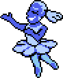
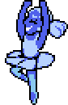
BlueShoes/Sapatilhas Azuis
Anula o custo da magia de Pacify.
Uma excelente escolha para Ralsei em ambas as rotas.
Seu efeito permite pacificar inimigos em significativamente menos turnos e aumenta bastante a
efetividade de sua cura. Ele também tem uma defesa baixa, assim como os Óculos de Seth, porém,
por ser uma arma, que normalmente não oferecem muita defesa, esse fator não tem tanta importância.
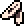
+2AT
+4DF
+6 Magic
Pacify0TP
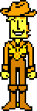
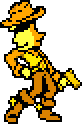
YellowHat/Chapéu amarelo
Aumenta em 20% o poder de magias curativas e em 10% o de magias agressivas.
Seu aumento percentual nas magias (que é bem mais efetivo do que simplesmente adicionar pontos de magia)
compensa seus status equilibrados, embora não especialmente bons em nada. Sem dúvidas, é uma ótima escolha
independente da rota.
+4AT
+4DF
+4 Magic
Skill20%
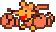
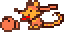
Orange Gloves/Luvas laranjas
Diminui o custo da magia Scythemare da Susie de 40% para 20%.
Essas luvas virtualmente lhe
concedem uma versão turbinada do pacificar pelo mesmo preço e, de brinde, oferecem a maior
quantidade de defesa do jogo inteiro (até o momento). Infelizmente, não são tão úteis se você não usa
essa magia com frequência ou se joga de forma agressiva. Caso contrário, são uma escolha imbatível.

+4AT
+8DF
ScytheTP-
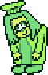
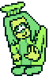
GreenApron/Avental verde
Recupera um pouco de HP ao defender (16% do HP máximo).
Oferece a segunda maior quantidade
de defesa do jogo, perdendo por apenas um ponto para a primeira, além de proporcionar uma cura
praticamente de graça, sem apresentar nenhum peso ou desvantagem em contrapartida. Esse avental é
essencial independentemente da sua rota, você sempre vai pegar esse.
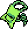
+7DF
DefendHeal
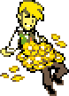
FloweryScarf/BrokenScarf
Cachecol de Flowery/Cachecol quebrado
Um cachecol que foi despedaçado na batalha, revelando que tudo não passava de um show.
Diferente dos outros equipamentos, esse não custa moedas rosas, então é basicamente de graça, contudo,
isso não muda o fato que é uma droga.
Esse cachecol é realmente só uma fachada. Sua primeira forma pode até ter status impressionantes,
mas são falsos, e nem dá pra equipar. Sobre sua versão quebrada, ironicamente, é mais útil,
tendo um dano bem decente; entretanto, carece em outros status, então provavelmente não vá ser útil
nos próximos capítulos.
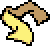
+70AT
+70DF
+70 Magic
TheBest
+12AT
+3DF
+3 Magic